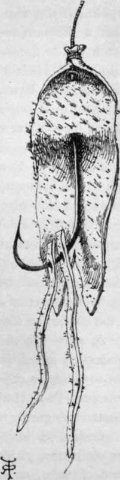

Bacon Skin
Description
This section is from the book "Sea Fishing", by John Bickerdyke. Also available from Amazon: Sea Fishing.
Bacon Skin
This is by no means a bad bait for bass and pollack, either for whiffing or casting, and may be cut out of either a thin-skinned piece of bacon or salt pork. It should be soaked and scraped. No fat should adhere to it. Either a triangular piece three or four inches long and an inch wide at the base should be used, or else a narrow strip half an inch wide and three or four inches long, slightly rounded at the end next the hook and brought to a tapering point, where it should be scraped thin and split. If the triangular piece is used, insert the hook at the apex of the triangle. I prefer when using simply a strip of skin to insert the hook at the thick end, to bring the bait up to the top of the shank, and then bind round above the eye, or flatted end of the hook.
A capital imitation of a small squid or cuttle can be made out of a piece of semi-transparent pork-skin. The illustration renders an explanation almost unnecessary, but I may say that the piece of skin provided for the artist was somewhat over-adorned with bristles. It should be well scraped before being cut to shape, and more than two feelers or tentacles can be hung on the hook if the angler so pleases. A strip of skin of any kind is easily fixed on the two-hook tackle used for worms, etc (see p. 117). A number of these baits can be prepared and placed in a bottle of salt. If you wish to be particularly artistic, you can cut out from a piece of pork or bacon skin an imitation fish and attach that to the shank of the hook in a similar manner. A strip of pig's bladder has also been used with good effect as a whiffing bait. Bass are fond of bacon or pork skin, which, owing to their partiality for a semi-putrid bait, is sometimes soaked for a day or two in weak soda water to render it a little gamey.
Bacon-Skin Bait To Imitate A Small Squid Or Cuttle.
Bass Skin
Bass skin makes a capital bait for whiffing or railing. A long strip half an inch wide should be cut off what I may term the edge of the belly of the fish. This should be opened and split down the middle, which will give two long strips, each half an inch wide. These can be cut into triangular pieces, the point of the hook being placed at the apex of the triangle ; the bait then has a much more lively motion than if the hook is inserted at the broad end or base of the triangle, as is the custom on some parts of our coasts.
Bloater
There are two fish which will take a strip of moderately salted bloater, viz. bass and eels ; but this bait is not so killing as others which may be used. In some places, however—Poole Harbour to wit—bass will take a very corrupt bloater with gusto.
Cockles
I have found these little shell fish excellent bait for sand dabs, plaice and flounders. Whiting pout are very fond of them, and, indeed, few fish will not take them at times. They are, however, not so killing a bait as the mussel. On some sandy shores they are extremely abundant, and may be picked up without difficulty, professional cockle-gatherers using a rake, as they lie a little below the surface. They should be scalded before being used : this opens the shells and solidities the fish. Being small bait, it is often necessary to place two or three on a hook.
Chad Bait
This is the young of the sea bream, and much used on the coasts of the West Countrie. I shall have more to say concerning these little fish later on in Chapter XIII. under the head of ' Bream'.
Continue to:
- prev: Chapter IV. Baits
- Table of Contents
- next: Crabs
Tags
fishing, hooks, bait, fishermen, spanish mackerel, mackerel fishing